In many previous examples we demonstrated how to use GeomObjects to parametrise curvilinear, moving domain boundaries. We used this functionality extensively to perform simulations of problems in moving domains. The techniques illustrated in these examples are adequate for problems in which the motion of the boundary is prescribed; see e.g. the
simulation of fluid flow in a 2D channel in which a part of one channel wall performs a prescribed oscillation.
Here we shall demonstrate how to use GeomObjects to parametrise curvilinear, moving domain boundaries in problem in which the position of the boundary is unknown and has to be determined as part of the overall solution. We will also address the following questions:
- What is a
GeomObject'sgeometricData? - What is a
GeneralisedElement'sexternal and internalData?
Part 1: A closer look at the GeomObject class: Geometric Data
In an earlier example, we introduced the GeomObject as a base class for all objects that provide an analytical parametrisation of a geometric object by specifying its Eulerian coordinates (i.e. the position vector to "material points" in the object, 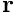) as a function of some intrinsic (Lagrangian) coordinates,  , so that 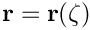. Every specific
, so that 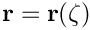. Every specific GeomObject must implement the pure virtual function
where the number of Lagrangian and Eulerian coordinates involved in the parametrisation (i.e. the sizes of the vectors zeta and r) are stored as unsigned integers in the protected member data, GeomObject::NLagrangian and GeomObject::Ndim, respectively.
Most specific geometric objects store some additional parameters as private data members. For instance, a GeomObject that represents a 2D circle, parametrised by the 1D Lagrangian coordinate 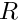 as
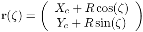
may be implemented as follows:
The shape and position of this GeomObject is defined by the parameters  and
and  which are stored as double precision numbers in the object's private member data.
which are stored as double precision numbers in the object's private member data.
In many applications (e.g. in free-boundary problems) it is necessary to regard some (or all) of the parameters that specify the object's shape as (an) unknown(s) in the overall problem. Within oomph-lib all unknowns are values in Data objects. We refer to any Data objects whose values affect the shape of a GeomObject as the GeomObject's geometric Data. The GeomObject class defines interfaces for two functions that provide access to such Data. The function
should return the number of geometric Data objects that affect a GeomObject's shape and position. The function
should return a pointer to the GeomObject's j - th geometric Data object. Both functions are implemented as "broken" virtual functions in the GeomObject base class in order to facilitate the creation of new GeomObjects. The functions should be overloaded in GeomObjects that actually contain geometric Data. If this is not done, the broken versions in the base class issue a suitable explanation before throwing an error.
Here is a re-implementation of the above GeomObject in a form that allows the the parameters and to be regarded as unknowns, by storing them as values in a suitable Data object:
The object has two constructors which we will discuss separately. The arguments to the first constructor specify the x- and y-coordinates of the ring's centre ( 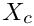 and 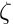), and its radius, , as double-precision numbers. The constructor creates storage for these values in the Geom_data_pt vector which is stored in the object's protected member data. First, the Geom_data_pt vector (empty by default) is resized to provide storage for a (pointer to a) single Data item. Next we create a Data object that provides storage for three values and store the pointer to this Data object in the first (and only) component of the Geom_data_pt vector. Finally, we set the values to those specified by the arguments and pin them to reflect the fact that, by default, the values are constants rather than unknowns in the problem. [Note: Clearly, there is some ambiguity as to how to distribute the values of the geometric parameters among the geometric Data. Here we chose to store the three values in a single Data object, but we could also have stored each value in its own Data object.]
With this constructor, the geometric Data that controls the shape of the object is created internally – the "user" only specifies the values of the parameters. Their values are accessible via the access functions
but their internal representation as (pinned) values of a Data object remains hidden. Access to the geometric Data is, however, possible via the functions
which overload the broken versions in the GeomObject base class. Both functions access the protected vector of pointers to the object's geometric Data:
The second constructor is appropriate for cases in which the Data object that specifies the object's shape has already been created elsewhere. In this case, we simply pass the pointer to the Data object to the constructor and store it in the first entry of the Geom_data_pt vector:
The boolean flag Must_clean_up is stored as private member data in the class. It is used in the destructor to decide if the geometric Data should be deleted. If the Data was created internally by the object (i.e. if the first constructor was used), the Data must also be deleted by the object; if the Data was created externally (i.e. if the second constructor was used), the Data must not be deleted as it may still be required in other parts of the code.
The function GeomObject::position(...) simply extracts the relevant parameters ( 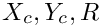) from the Geom_data_pt vector and computes the position vector as a function of the 1D Lagrangian coordinate :
Part 2: Upgrading a GeomObject to a GeneralisedElement
We will now consider a (toy!) problem in which the ability to treat a parameter that specifies the shape and/or the position of a geometric object as an unknown (i.e. as a value in a Data object) is essential: A circular ring of radius is mounted on a linearly elastic spring of stiffness 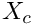. We wish to find the ring's equilibrium position when it is subjected to a vertical load, 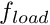.
To solve this problem with oomph-lib [Yes, the solution is 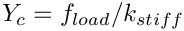 but let's pretend we don't know this...], we employ C++ inheritance to "upgrade" the GeneralCircle object, discussed above, to a GeneralisedElement in which the vertical position of the ring, 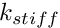, is one of the unknowns whose value is determined by the equilibrium equation (in residual form),
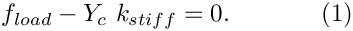
In the present problem, the load on the ring is a control parameter, but in different applications it may be an unknown whose value has to be determined as part of the solution. (For instance, in fluid-structure interaction problems, the load on an elastic structure depends on the unknowns in the adjacent fluid elements.) Therefore, we also represent by a Data object.
To solve the above problem with oomph-lib, the residual equation (1) must be implemented in the get_residuals(...) function of a suitable GeneralisedElement. Recall that the elemental residual vector computed by a GeneralisedElement can depend on two types of Data:
- Internal Data stores values that are "internal" to the element, i.e. values that the element is "in charge of". Such
Datais accessible via the pointer-based access functionGeneralisedElement::internal_data_pt(...) - External Data stores values that are "external" to the element. The values stored in such
Dataaffect the element's residual vector but its values are not determined by the element. SuchDatais accessible via the pointer-based access functionGeneralisedElement::external_data_pt(...)
In the present context, it is most natural to regard the GeneralCircle's geometric Data as internal to the element and the load Data as external.
Here is the class definition for the ElasticallySupportedRingElement which combines the GeneralisedElement and GeneralCircle classes by multiple inheritance. Its role as a GeomObject allows the object to be used in the parametrisation of domain boundaries; its role as a GeneralisedElement allows the value of 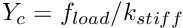 to be determined as part of the solution.
The arguments to the constructor specify the initial geometric parameters, and . We pass them to the constructor of the GeneralCircle object and assign a default value for the spring stiffness 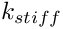 (stored as a private data member of the class; see below):
Next, we add the GeneralCircle's geometric Data (created automatically by the constructor of the GeneralCircle object; see above) into the element's storage for its internal Data. This ensures that the geometric Data is included in the element's equation numbering procedures. Within the context of the GeneralCircle, all geometric parameters were regarded as constants and their values were pinned. Here, the vertical position [stored in the second entry in the geometric Data] is unknown, therefore we un-pin it.
Once Data has been added to a GeneralisedElement's internal Data, it is deleted by the destructor of the GeneralisedElement when the GeneralisedElement goes out of scope. The Data must therefore not be deleted again by the destructor of the GeneralCircle class, and we change the cleanup responsibilities accordingly:
Since the GeneralisedElement's destructor will delete the internal Data, the destructor can remain empty:
The Data whose one-and-only value represents the load must be set by the "user", using the function set_load_pt(...) As discussed above, we store the pointer to the load Data object in the GeneralisedElement's external Data and record its index within that storage scheme.
[Note the sanity check which asserts that the load Data object only contains a single value; see Comments and Exercises for a further discussion of this aspect.]
The load() function provides access to the load specified by the load Data. It returns zero if no load was set – a sensible default.
Next, we provide an access functions to the spring stiffness parameter,
and functions that allow the vertical displacement of the ring to be pinned and un-pinned:
Finally, we implement the pure virtual functions GeneralisedElement::get_jacobian(...) and GeneralisedElement::get_residuals(...) which are required to make the element functional. These functions must compute the element's contributions to the Problem's global residual vector and Jacobian matrix. As usual, we implement them as wrappers to a single function that computes the residual and (optionally) the Jacobian matrix:
The "real work" is done in the protected member function get_residuals_generic(...), where we distinguish two cases.
- The load is prescribed, i.e. the (single) value in the load
Dataobject is pinned. In this case, the element'sDatacontains only one unknown – the vertical displacement , stored as value 1 in the internalData. The element's residual vector has a single entry, given by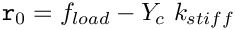
and the element's Jacobian matrix is a 1x1 matrix whose single entry is given by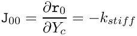
- If the load is unknown (i.e. an unknown in the overall problem) the element's
Datacontains two unknowns. Recall that an element only makes a contribution to the residuals associated with unknowns that it is "in charge of" – the externalDatais assumed to be "determined" by another element. Therefore, the elements residual vectors (i.e. its contribution to theProblem'sglobal residual vector) is given by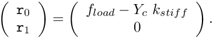
The element's 2x2 Jacobian matrix contains the derivatives of the residuals with respect to the element's unknowns, 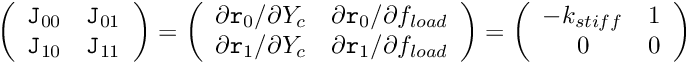 and ,
, ![\[
\left( \begin{array}{cc}
{\tt J}_{00} & {\tt J}_{01} \\
{\tt J}_{10} & {\tt J}_{11}
\end{array} \right)
=
\left( \begin{array}{cc}
\partial {\tt r}_0 / \partial Y_c&
\partial {\tt r}_0 / \partial f_{load} \\
\partial {\tt r}_1 / \partial Y_c &
\partial {\tt r}_1 / \partial f_{load}
\end{array} \right)
=
\left( \begin{array}{cc}
- k_{stiff} & 1 \\
0 & 0
\end{array} \right)
\]](form_22.png)
Note that we have (correctly!) assumed that the (fully automatic) local equation numbering procedure, implemented in GeneralisedElement::assign_local_eqn_numbers(), regards the internal degree of freedom as local unknown "0" and the external one (if it exists) as unknown "1". However, to be on the safe side, we determine the local equation numbers via the access functions internal_local_eqn(i,j) and external_local_eqn(i,j), which return the local equation numbers of the j-th value, stored in the element's i-th internal (or external) Data object:
Part 3: The driver code
Finally, we provide an example that shows our ElasticallySupportedRingElement in action. The animation below shows the result of the computational simulation of the toy problem described at the beginning of the previous section: An elastically supported ring, subjected to a vertical load. The animation shows the position of the ring for various values of the load.
The driver code
The driver builds the Problem object and solves the problem for various load levels:
The problem class definition
Here is the problem class definition which requires little comment:
The problem constructor
In the problem constructor, we create the (single) ElasticallySupportedRingElement and and assign a value to its "spring stiffness" parameter.
Next, we create the problem's mesh: We start by creating an (empty) Mesh object and then add the (pointer to the) newly created ElasticallySupportedRingElement (in its incarnation as a GeneralisedElement) to it:
As discussed in the previous section, the load must be specified as a Data object that stores a single value. In our example, the load is prescribed (i.e. not an unknown in the problem) therefore the value must be pinned:
Finally, we set up the equation numbering scheme, set the output directory and open a trace file in which we will document the load/displacement characteristics.
The post-processing function
The post-processing routine is straightforward and is listed only to highlight the need to cast the pointer to the GeneralisedElement (as returned by Mesh::element_pt(...)) to the specific element used here – obviously, a GeneralisedElement does not have member functions that return the load on the ring or its vertical displacement.
Comments and Exercises
Exercises
- In the current implementation of the
ElasticallySupportedRingElement, the loadDatamust only store a single value: Generalise this to the case where theDataobject can contain an arbitrary number of values. You could add an additional argument to theset_load_pt(...)function to specify which value in theDataobject represents the load. Think carefully in which other parts of the code this index will be required.
Source files for this tutorial
- The source files for this tutorial are located in the directory:
demo_drivers/interaction/free_boundary_poisson/
- The driver code is:
demo_drivers/interaction/free_boundary_poisson/geom_object_element.cc
PDF file
A pdf version of this document is available. \